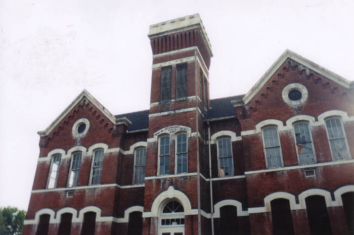
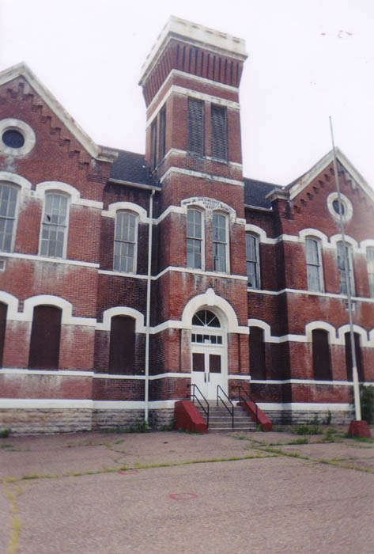
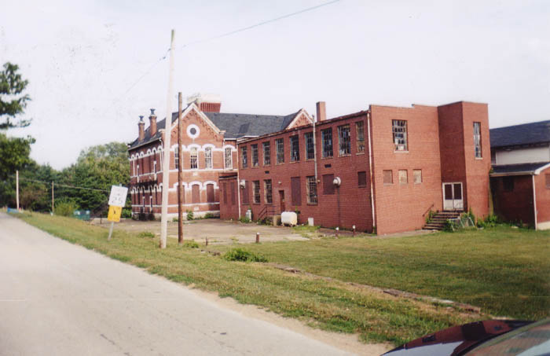
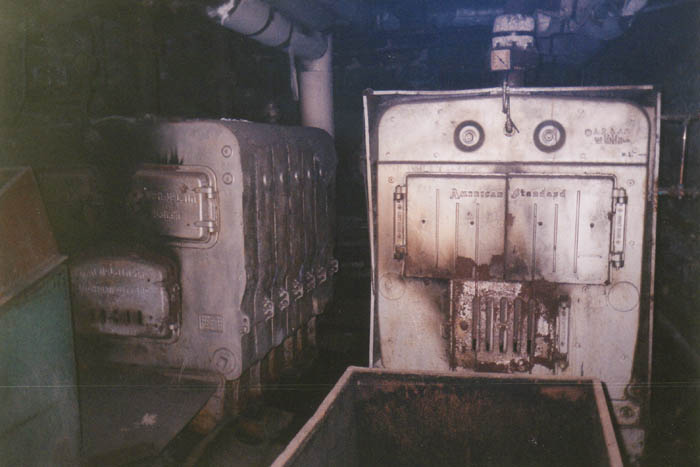
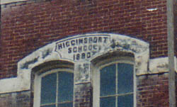

Higginsport is a little Ohio River town in Brown County, located just a few miles from Utopia. It's a very old town that has seen a lot of action--more so in the nineteenth century, when riverboats were an important means of transportation and the Ohio was a major shipping lane.

Higginsport's old public school is one of the many architectural relics from this era which still stand in towns along the river. According to the carving on the belfry, it was built in 1880, but today the kids in Higginsport go to newer consolidated schools. According to reports I've gotten, it closed down in 1993 or so, with the kids transferring to the co5nsolidated school in Ripley.

I first discovered this building on a trip to look for the underground room in Utopia in summer 2001 but did not get a chance to go inside. It stands in the middle of a neighborhood less than a block from the highway, which makes it a bit tricky to mess around with. It wasn't until a year later that we finally headed back with the intention of getting a look inside.

The Higginsport School, it turns out, is haunted. A man was burned badly by the boiler and died in the basement. Strange voices are heard inside, even though for most of the year no one uses the school.

I say most of the year because in October of 2003 they started using it as a local haunted house, playing up the ghost stories and giving paid tours through the heavily decorated school building.
So does it qualify as abandoned? It's definitely not used as a school anymore, so I say yes. If you have any information about this school please drop me a line and I'll add it to the page.

Back
forgottenohio@yahoo.com